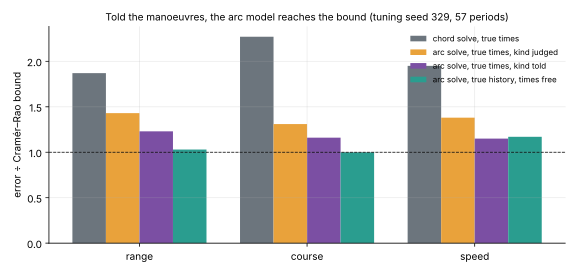
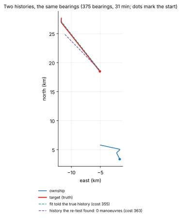
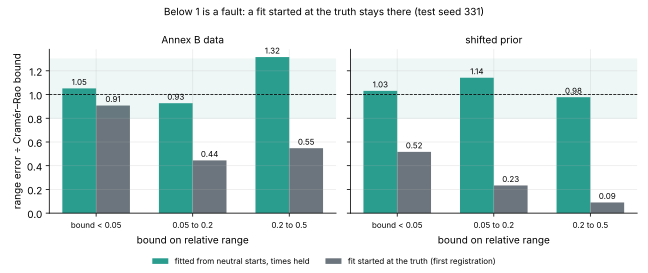
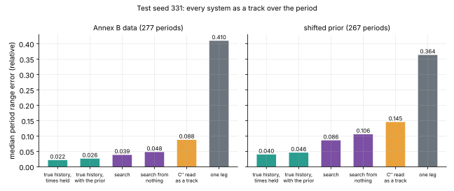
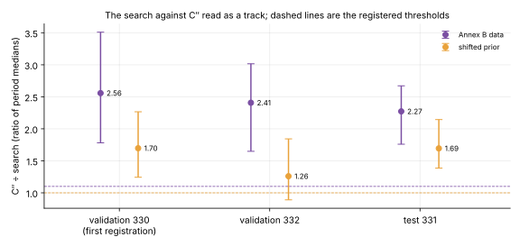
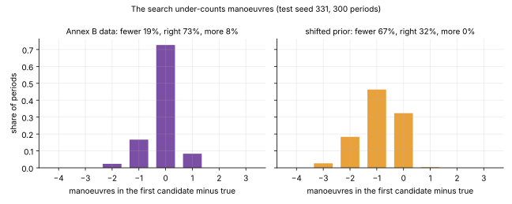
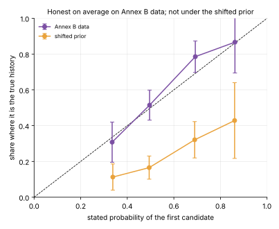

Not "where is the target now?" but "what did it do over the last half hour?"
All the bearings in hand: one every 5 seconds, 20 to 60 minutes.
The answer is a track: position, course and speed at every moment, and when it manoeuvred.
Told the manoeuvres, the fit is at the bound

Tuning seed 329. A turn modelled as an arc at a constant rate brings the fit from 1.9 × the bound to about 1.2. The model is not the limit.
But the bearings do not say which history

A test of fit reaches the true history's cost with a third of manoeuvres missed. What separates histories is knowledge of how targets manoeuvre.
The search
Propose histories: add, remove or change a manoeuvre.
Fit each with the arc model and Annex B's statistics.
Score each by its evidence.
Return the best few as candidate tracks with probabilities.
The first registration stopped itself

The reference scored below the bound: it had been started at the truth and stayed there. The gate stopped at validation; the owner re-registered with a reference fitted from neutral starts and every threshold unchanged.
The gate on test seed 331
Check
Result
Outcome
T-a reference at the bound
1.05 (band 0.8–1.3)
pass
T-b C″ ÷ search above 1.10
2.27 [1.76, 2.67]
pass
T-c the same, shifted prior, above 1.00
1.69 [1.39, 2.14]
pass
T-d candidates
0.71 in first three; gap −0.03
pass
T-d-shift calibration
gap +0.32
fail, as forecast
T-e search ÷ reference
1.46 [1.24, 1.91]
material
300 periods per split. Decided by the panel in one round: five approve with findings.
Every system as a track

C″ 0.088, search 0.039, reference 0.022 on Annex B data. The IMM and EKF give no state on most rows and are not drawn.
Three seeds

Stable on Annex B data. Under the shifted prior one of three seeds would have failed: the pooled figure is about 1.6.
What the panel narrowed
"2.3 times better" → a ratio of medians. Period by period 1.7; worse than C″ in 30% of periods.
"The search finds the history" → it wins where its history is wrong too. Mostly smoothing with a model and a prior.
"Room left: 1.46" → an upper limit. Paired 1.17; the gap sits only where the history is wrong.
The soundness check would have passed the faulty reference.
It under-counts manoeuvres

23% of true manoeuvres missed on Annex B data, 41% under the shift. With no manoeuvre at all (12 periods) it invents one in 7 of the 12.
Probabilities: honest on average only

Under the shifted prior the candidates carry a ranking and no probability, and nothing tells the analyst which regime applies.
What was not achieved
The owner's bearing-rate thinning study.
A target that never manoeuvres, and the false-manoeuvre rate.
Correlated or outlying bearing errors; whole engagements; a smoothed IMM.
The control that separates the search from the model and prior.
Any real data: the fitting model is the generator's own.
What comes next
The owed classical studies and controls.
A search robust to a wrong prior, with a diagnostic for it.
Then a learned whole-period model, registered against the search under the same prior.
The choice is the owner's; no GPU run before it. Write-up: /blog/2026/11/12/gate-t · record: experiments/20261112-gt2 (review.md)